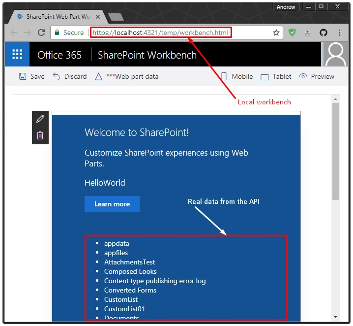

Local SPFx Workbench against real SharePoint API
When dealing with SharePoint Framework (SPFx), a developer can choose local or remote runtime debug strategy.
By default by running gulp serve, the local workbench is started. Local workbench opens on https://localhost:4321/temp/workbench.html, it is a page which mimics SharePoint modern UI, yet it's just a locally served page, it has no connection to SharePoint APIs.
Local mode provided the capability of mocking UI and styling based on some artificial data prepared beforehand or generated with specific libs. Local workbench uses hot module reload on changes, once started you just change the code and check for updates in browser's window.
Sometimes, real API's response data is required and mocking is too time-consuming and unproductive. SPFx has a solution for this. There is online version of the workbench, which can be found via [SHAREPOINT_WEB_URL]/_layouts/15/workbench.aspx. When gulp serve --nobrowser (--nobrowser key is handy when you get tired of auto-opening local workbench page) has been started web parts can be placed to online workbench while scripts can be hosted from a local machine.
Such mode allows acting with real data and REST API (or other APIs).
At this moment you might ask "Ok, online workbench saves the day, what the deal? Why do I need local workbench ever talking to the APIs?". Actually, it's a good question, but believe me, there are use cases (for example using web parts in production and developing and delivering new versions within one single tenant). Would be cool hearing about your use cases in the comment section below!
Anyway, it's super simple to configure "local" to work with "remote", let's take a look how.
Configuring SPFx solution to work with the proxy
As a prerequisite SPFx project should be created.
1. Install SharePoint REST Proxy in SPFx solution's project.
npm install sp-rest-proxy --save-dev
sp-rest-proxy is a dev dependency, it provides authorized anonymous proxy gateway to SharePoint APIs with CORS enabled. So any page on a developer's machine can request SharePoint API seamlessly.
2. Create proxy.js file in a root or wherever in the project with the following content:
const CertificateStore = require('@microsoft/gulp-core-build-serve/lib/CertificateStore');
const RestProxy = require('sp-rest-proxy');
const settings = {
port: 4323,
protocol: 'https',
ssl: {
cert: CertificateStore.default.instance.certificateData,
key: CertificateStore.default.instance.keyData
}
};
const restProxy = new RestProxy(settings);
restProxy.serve();
[ Download script ]
To make requests from the local workbench to proxy happen, the proxy's local server should be running on https/SSL. Here is the script we're using some sort of trick and reusing SPFx certificate, so proxy's SSL trust is tied up with workbench's cert. (You can trust/untrust SPFx cert with gulp trust-dev-cert and gulp untrust-dev-cert accordingly).
3. Create npm task to start proxy, e.g. "proxy": "node ./proxy".
4. Run and configure proxy's connection to the environment by node ./proxy or currently created npm task npm run proxy.
This is required once you need to "bind" the proxy with remote SharePoint server and provide credentials. Follow the wizard prompts to finish this step. Check out project's page for more details.
5. Configure a task to start proxy and gulp serve at the same time, e.g. using concurrently or npm-run-all.
Setup with concurrently:
5.1 Install dependency:
npm install concurrently --save-dev
5.2 Add npm task to package.json:
"scripts": {
...
"serve": "concurrently --kill-others \"npm run proxy\" \"gulp serve\""
...
}
Now you can start both proxy and SPFx local server with one command:
npm run serve
We are done with configuration. Now it's time to cover some coding aspects.
Detecting local mode
With proxy at our disposal, SPFx consumes real API in local mode. All we need to do is implement variability of switching between endpoints.
Let's assume your SharePoint Web is located at https://contoso.sharepoint.com/sites/site/my_web.
SPFx web part is generally agnostic to the future location of the web. Web URL can be get known in a runtime using this.context.pageContext.web's object properties: absoluteUrl or serverRelativeUrl. REST requests are usually built using this variables.
The local mode, in the opposite, knows nothing about target environment. You're in charge of pointing HttpClient to request correct URLs. One of them is kind of static, it's a proxy's host URL, https://localhost:4323, web relative URL should be somewhere in the settings.
In the local mode, a web part should construct the following sort of endpoint for requests https://localhost:4323/sites/site/my_web/_api/.... It should always deal with absolute URLs in this kind of setup.
Once this is clear, the question is how to detect local mode gracefully. Luckily SPFx has helpers for this situation (and there is no need to use window.location.href.indexOf('https://localhost:') === 0):
import { Environment, EnvironmentType } from '@microsoft/sp-core-library';
if (Environment.type === EnvironmentType.Local) {
// Local mode
} else {
// Online mode
}
We can rely code logic on this condition and provide initial endpoint rather robustly.
Bonus section - configuring PnP JS Core
Oh, you might know, I'm a huge fan of sp-pnp-js and prefer this library over building requests manually.
PnP JS Core works nicely with SPFx and I glad to inform you it works great with SPFx plus SharePoint REST Proxy. Once configured properly.
import { Web, setup } from 'sp-pnp-js';
import { proxyUrl, webRelativeUrl } from './../settings';
// settings.ts should be created with corresponding exports
...
let web: Web;
if (Environment.type === EnvironmentType.Local) {
web = new Web(`${proxyUrl}${webRelativeUrl}`);
} else {
// On SharePoint page sp-pnp-js should be configured with
setup({ spfxContext: this.context });
// or a Web object should be created with explicit web URL
web = new Web(this.context.pageContext.web.absoluteUrl);
}
// Then universal pnp code and dealing with SPFx specifics
/*
web.lists.get()
.then(...).catch(...);
*/
...
Example
I've published a simple example with the setup described above. The example can be found here.
